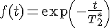
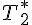
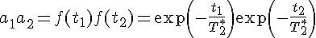
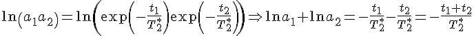
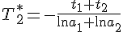
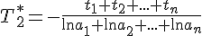

легко выражается:
легко выражается:
Спад свободной индукции (ССИ) можно описать формулой
 (1)
В случае, когда необходимо оценить  по двум или нескольким точкам на ССИ можно воспользоваться следующим приёмом:
Допустим, нам известны две точки на экспоненте (a1, t1) и (a2, t2). Согласно уравнению (1) можем написать:
,
откуда, применяя к обеим частям равенства натуральный логарифм, получим:
,
откуда легко выражается:
,
где знак минус имеет смысл спадающей экспоненты.
Очевидно, что аналогично можно провести расчет по любому количеству точек:

Чем лучше однородность поля, тем больше значение . Меняя ток в шиммирующей катушке, добиваемся максимального значения  .
.